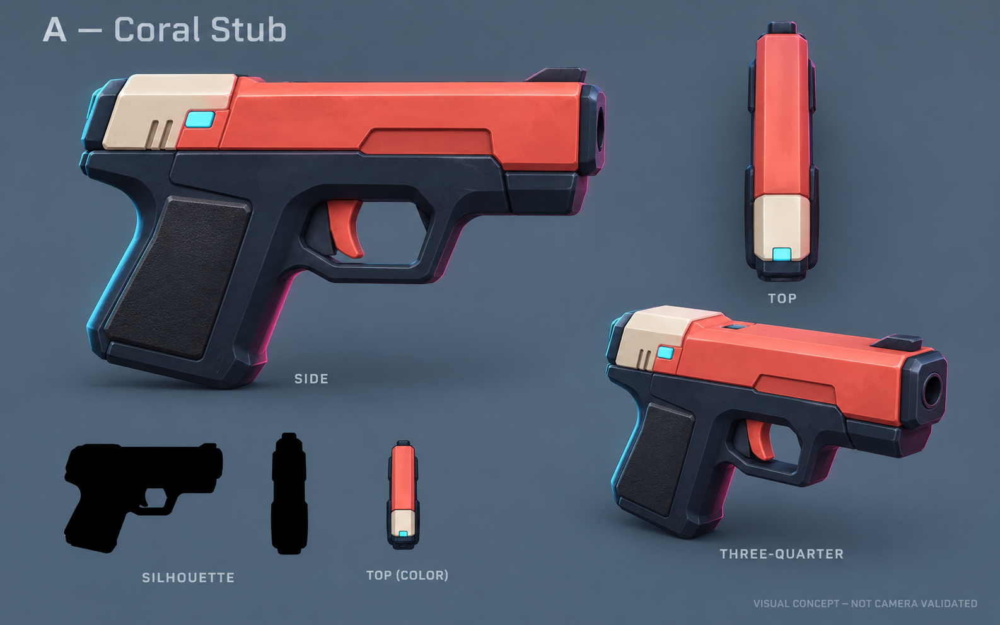
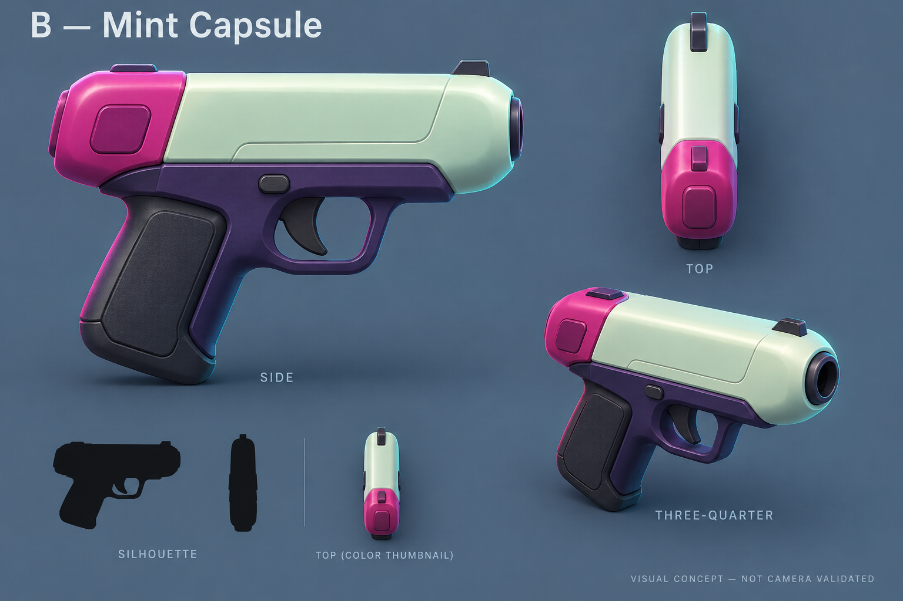
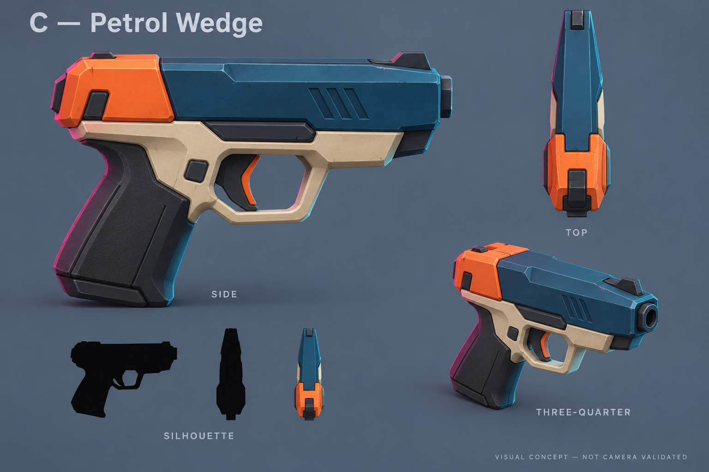

Pistol concepts — Regner review
Three original pistol directions
Selected: A — Coral Stub, by Regner — 9 October 2026.
Smooth chunky game props for the dark, vibrant city. Each board shows side, top,
three-quarter and black silhouettes. Recommendation: A — Coral Stub.
These are generated visual concepts. Actual held-camera readability,
production scale and animation have not been validated. Target: vertical-down north-up
perspective, 47 m / 42° / 1280×800. Blender production is now authorized.
A — Coral Stub · recommended
Compact everyday sidearm with a coral slide, cream rear patch and dark grip.
Broad overhead color blocks; fine cyan detail is optional decoration.

B — Mint Capsule
Rounded mint shell, magenta rear cap, violet frame. Most playful direction;
bright top contrast, with a greater risk of reading as a gadget.

C — Petrol Wedge
Tapered petrol-blue shroud with orange rear shoulders and a cream frame.
Strong top contour; dark forward body needs testing against night streets.
